Trilha Sonora
Quando a série começou, em 1963, Ron Grainer foi chamado para compor o seu tema, e então, fez uma melodia base, sem ser muito detalhista, e para a execução e gravação da obra, passou-a para Delia Derbyshire, que trabalhando com o BBC Radiophonic Workshop, fez daquela composição uma peça de música eletrônica pioneira, sendo o primeira música eletrônica a ser tema de um programa de TV. Para muitos, Derbyshire é a Mãe da Música Eletrônica. Com o tempo, diferentes arranjos foram usados para a música, que continua até hoje a mesma, sendo então, um dos temas mais duradouros da TV.
Desde a volta de Doctor Who em 2005, Murray Gold é responsável pela trilha sonora da série, que conta com a colaboração de Ben Foster, que conduz a BBC National Orchestra of Wales, a qual recebe a função de executar as obras fantásticas compostas para a série, como “Rose’s Theme”, “I’m the Doctor” e os diferentes arranjos já escritos por Murray desde 2005.
Série Clássica
Arco 002 – The Daleks
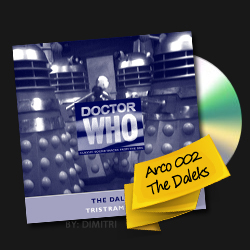
Arco 021 – The Daleks Master Plan
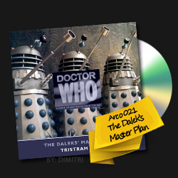
Arco 130 – The Five Doctors
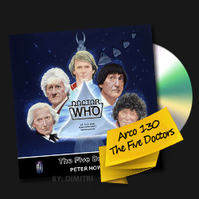
Doctor Who (1996)
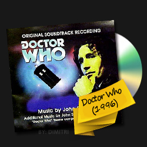
Série Atual
1ª & 2ª Temporada
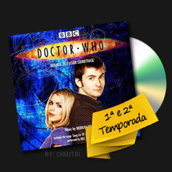
3ª Temporada
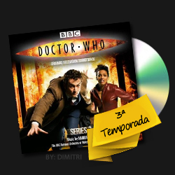
4ª Temporada
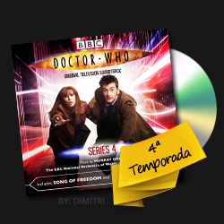
Especiais da 4ª Temporada
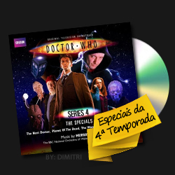
5ª Temporada
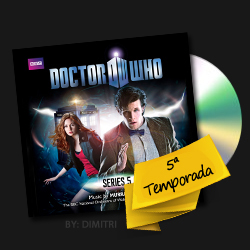
Especial Christina Carol
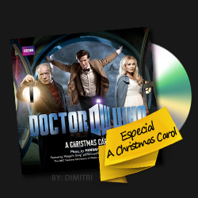
6ª Temporada
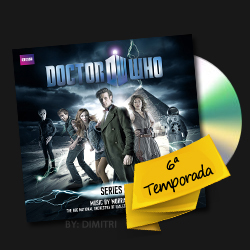
7ª Temporada
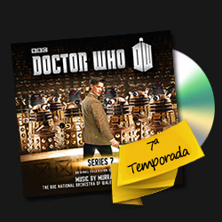
Especiais de Natal
Outras Trilhas
Tom Baker Era
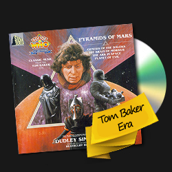
BBC Radiophanics – Volume 1
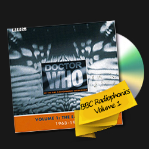
BBC Radiophanics – Volume 2
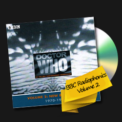
BBC Radiophanics – Volume 3
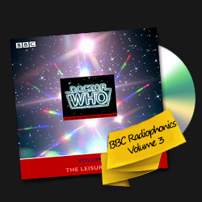
Doctor Who – Sound Effects
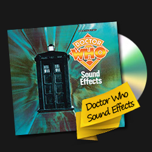
An Adventure In Space And Time
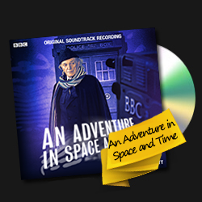
The 50Th Anniversary
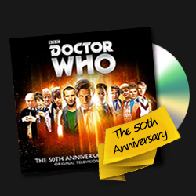Créditos dos links dos Áudios, das Imagens e Textos: Universo Who